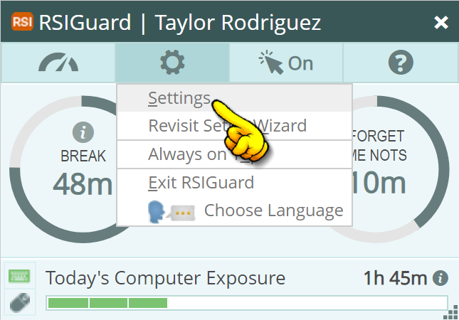
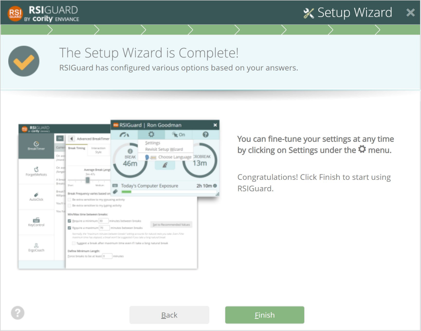

The wizard introduced you to RSIGuard features and did some quick setup. It's really important to periodically visit the Settings pages to fine tune features and explore all the functionality that's available.
To adjust settings, click the Tools menu of the main RSIGuard window (pictured below) and select Settings.

Click the Finish button and the Setup Wizard is complete!

« Back | Explore Full Feature Documentation »